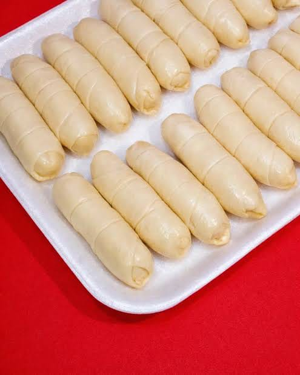
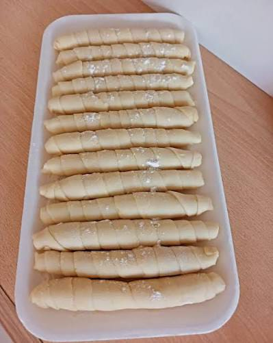
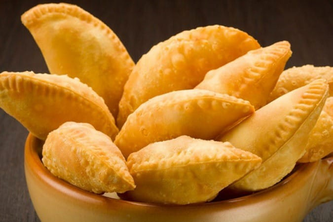
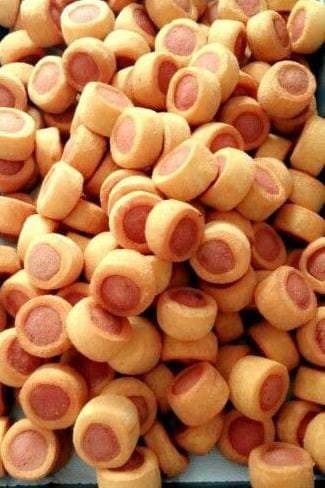

Un clásicoSABOR CASERO · BARRANQUILLA
Pequeños bocados,
grandes momentos.
Pasabocas preparados para acompañar tus desayunos, meriendas, reuniones y celebraciones. Tú eliges, nosotros te ayudamos a compartir algo rico.
Con cariño en cada bocadoPedidos para disfrutar en casa o compartir.

✦
Hechos para compartirUn antojo para cada ocasión
SABOR
CASERO
CASERO
Entrega a domicilioEn Barranquilla
Para toda ocasiónDesayunos, meriendas y eventos
Pedido sencilloArma tu carrito y escríbenos
PARA ANTOJARSE
Los favoritos de la casa

Para compartir
Para picarTÚ PONES LA OCASIÓN
Nosotros ponemos
el sabor.
Una tarde en familia, un cumpleaños o una reunión con amigos: elige tus pasabocas favoritos y prepara un pedido a tu medida.
Preparar mi pedido →